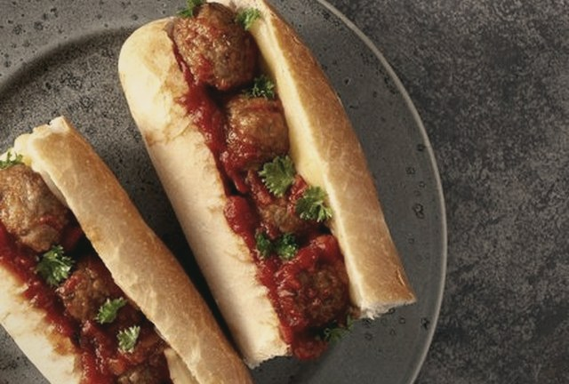
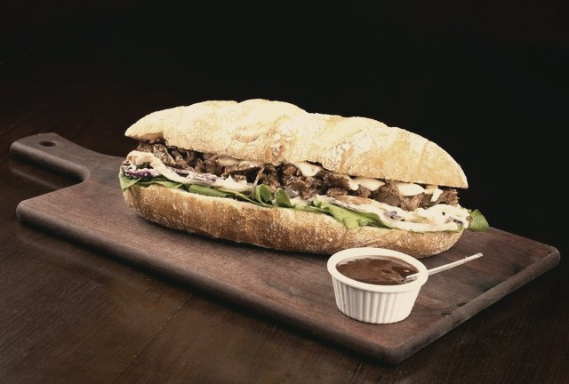
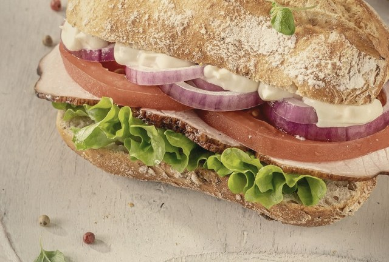

“Estas cinco las armé yo.
Respondo por cada una.”
Sando
La carta
Abierto · cierra 10 p.m.
Recetas cerradas. Eliges una y no hay nada más que decidir.

I · la estrella
The Marinara
S/21.9030CM 28.90
Para la noche en que ya decidiste que no vas a cocinar. Albóndigas hechas acá, cocidas dentro de su propia marinara.

II
The Original
S/20.9030CM 26.90
El almuerzo que tiene que aguantar hasta la noche. Punta de pecho a fuego lento hasta que se deshace sola.

El sándwich secreto
1 de 3 pedidos
No está en la carta. Cambia cada mes. Se revela cuando lo pides.